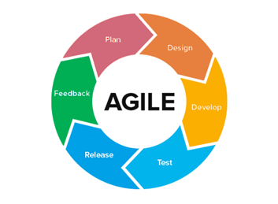

Idea for Website
Purpose
The purpose of this project is to help first time pet owners with the challenges of owning a pet for the first time (dogs and cats to be more specific). Agile method will best fit this project since I would need flexibility to change the website whenever needed.

Font Styles
For font styles I have chose these four
This font is for the TITLE PAGE
This font is for PARAGRAPHS
This font is for HEADERS
Color Scheme
For color scheme I wanted a more playful pallet.